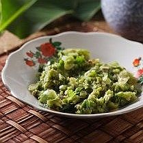

Sambal Bledak

Bahan :
- 25 buah cabai rawit hijau
- 5 butir bawang merah
- 2 cm kencur
- 2 buah tomat hijau
- 1/2 sendok makan garam
- 1 sendok teh gula merah
Cara membuat:
- Ulek kasar cabai rawit, bawang merah, kencur dan tomat.
- Tambahkan garam dan gula merah. Ulek rata.
- Sajikan.